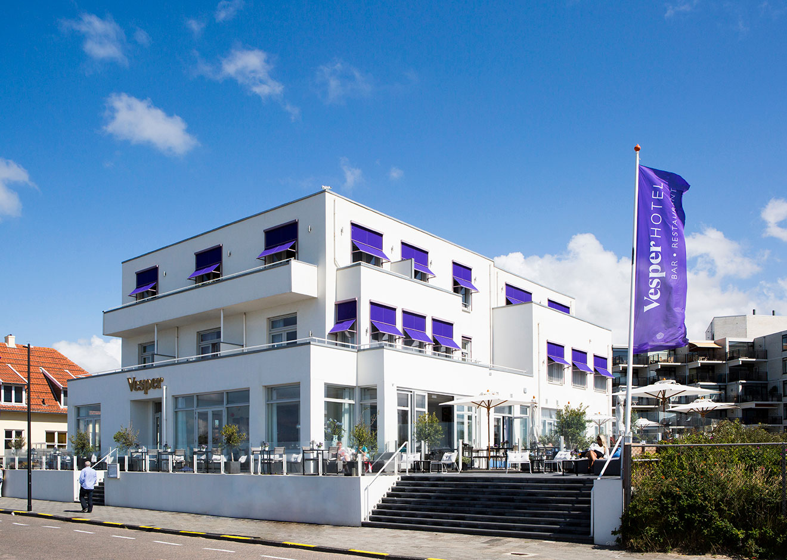

Hotels in Noordwijk
Hotel Van Der Valk

In het schilderachtige Noordwijk aan Zee biedt het Van der Valk Palace Hotel een oase van
luxe met bekroonde voorzieningen, waaronder een weelderige spa,
een eigentijds fitnesscentrum en een culinair hoogstaand restaurant.
Gasten worden uitgenodigd om te ontspannen in de uitgebreide spa, gebruik te maken van gratis toegang tot
het fitnesscentrum en het zwembad,
en te genieten van ruime kamers met levendige kleuren en moderne faciliteiten die een perfecte harmonie van
comfort en elegantie creëren.
De gunstige ligging maakt het hotel ideaal voor het verkennen van de natuurlijke omgeving per fiets of te
voet,
en met nabijheid van attracties zoals de Noordwijkse Golfclub en het betoverende bloemenpark de Keukenhof,
belooft het Van der Valk Palace Hotel
een weergaloze 4-sterrenervaring te midden van natuurlijke pracht.
Hotel Huis Ter Duin

Hotel Huis ter Duin, gelegen tegenover het strand in Noordwijk aan Zee, biedt een luxe
5-sterrenervaring met voorzieningen zoals een fitnesscentrum, tuin, gedeelde lounge, restaurant, terras,
binnenbad en sauna.
De accommodatie biedt ook roomservice, een 24-uursreceptie en geldwisselservice.
De kamers zijn voorzien van airconditioning, een bureau, kluisje, flatscreen-tv en eigen badkamer met
douche,
inclusief beddengoed en handdoeken.
Gasten genieten van wandel- en fietsmogelijkheden, en fietsverhuur is beschikbaar.
Het hotel biedt een businesscentrum, fitnessfaciliteiten en een ontspannende bar.
Het strand van Noordwijk aan Zee ligt op 2 minuten lopen, Keukenhof op 12 km afstand en de dichtstbijzijnde
luchthaven is Schiphol, op 29 km van het hotel.
Alexander Hotel

Alexander Hotel, op 200 meter van het strand van Noordwijk aan Zee, biedt gratis
Wifi.
De Alexander Beach Club heeft een terras met zeezicht.
Naast het hotel is het Azzuro Wellness Centre, waar gasten gratis toegang hebben tot het binnenbad, Turks
stoombad en bubbelbaden.
De spa biedt ontspannende behandelingen en er zijn tennis- en squashbanen.
Elke kamer heeft een balkon en badkamer met douche.
De Alexander Beach Club serveert snacks en maaltijden met drankjes, terwijl het hotel-restaurant Franse
gerechten met internationale invloeden biedt.
Winkelstraten en amusementslocaties in Noordwijk aan Zee zijn op korte afstand.
Gasten kunnen fietsen huren om de duinen te verkennen. Amsterdam is 40 minuten rijden.
Vesper Hotel

Hotel, gelegen aan het strand in een exclusieve buurt van Noordwijk, biedt een
à-la-carterestaurant en gratis wifi.
De individueel ontworpen kamers zijn uitgerust met een flatscreen-tv en een koffiezetapparaat.
De suites hebben luxe badkamers met een föhn en een bad of douche. Sommige kamers bieden uitzicht op de
tuin, terwijl andere uitzicht op zee bieden.
Het hotel beschikt over een 24-uursreceptie, tuin en terras, evenals bagageopslag, stomerij en
strijkservice.
Er zijn ook 3 vergaderzalen voor kleine bijeenkomsten.
Op 1,1 km afstand ligt het Azzurro Wellness Centre, waar gasten gratis toegang hebben tot het binnenzwembad,
fitnessfaciliteiten, Turkse stoomruimte en bubbelbaden, evenals tennis- en squashbanen.
De luchthaven Schiphol ligt op 24 km afstand, en Den Haag is binnen 30 minuten met de auto bereikbaar vanaf
Vesper Hotel.